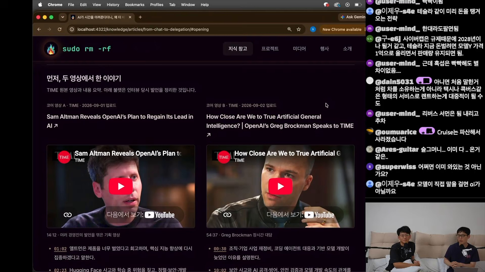
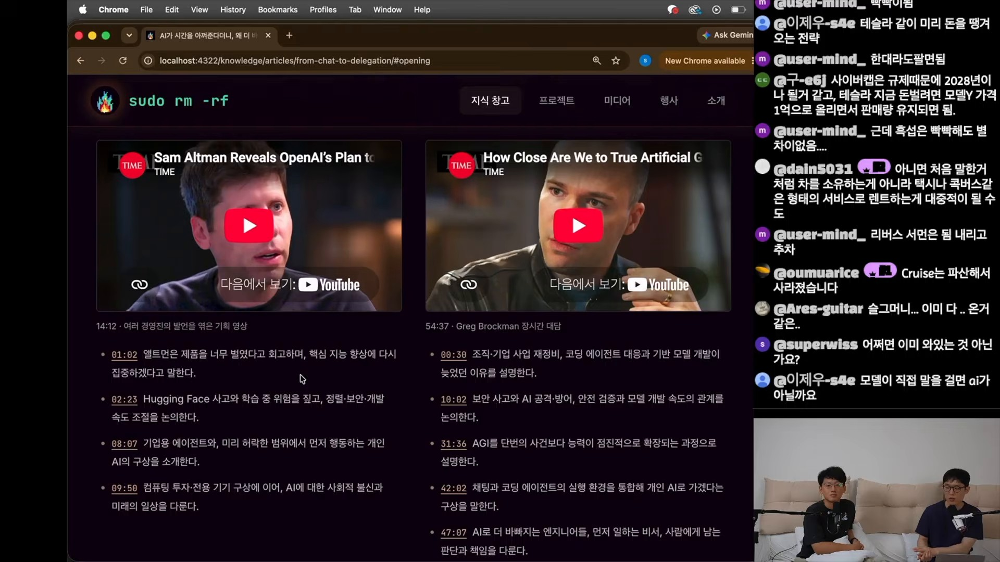
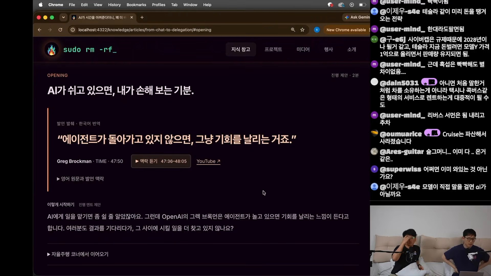
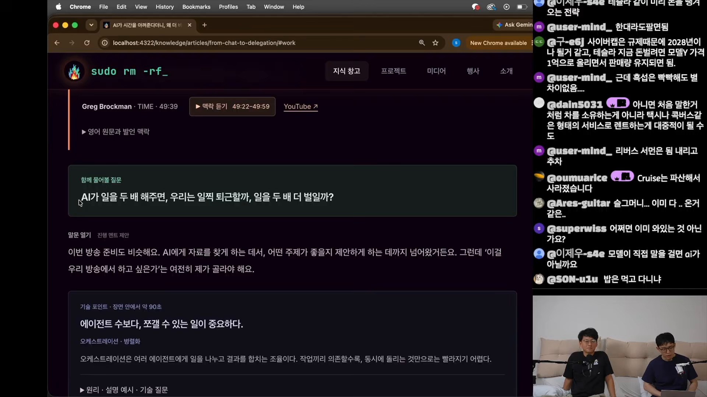
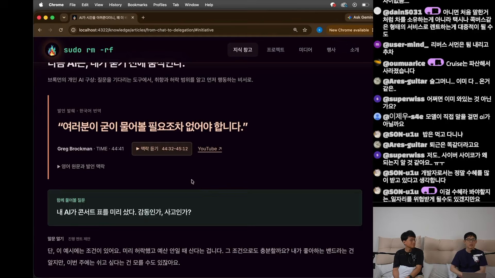
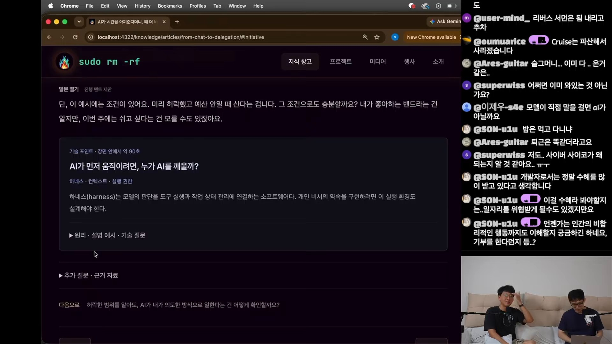

AGI는 사건인가,
우리가 통과하는 구간인가
토론은 익숙한 질문의 퇴장에서 시작한다. 예전에는 AGI가 언제 올지를 자주 물었는데, 요즘은 그 이야기가 줄었다는 것이다.
진행자들이 제시하는 이유는 능력의 비대칭이다. 어떤 업무에서는 사람보다 훨씬 뛰어나 보이지만, 다른 업무에서는 기대에 크게 못 미친다. 이처럼 고르지 않은 발전 앞에서 ‘범용’이라는 단어의 경계도 흐려진다. 영상과 로봇 행동, 감정과 상황의 이해는 아직 부족하다고 거론되지만, 이는 출연자들의 체감 평가이며 비교 실험의 결과는 아니다.
이 회차의 교재는 TIME 인터뷰 두 편이다. 영상 속 화면에는 진행자들이 만든 로컬 아티클이 열려 있다. 인터뷰의 발언 요약과 질문, 진행 멘트, 기술 설명을 함께 배치한 일종의 토론 대본이다.

‘먼저, 두 영상에서 한 이야기’. 모델 리뷰에 앞서 인터뷰를 교재로 삼는 토론의 구성이 드러난다.

원본 인터뷰별 타임스탬프 요약. AGI를 점진적 과정으로 보는 관점이 토론의 중심이 된다.
| 구분 | 영상 A · 샘 올트먼 중심 | 영상 B · 그렉 브록먼 대담 |
|---|---|---|
| 원제 | Sam Altman Reveals OpenAI's Plan to Regain Its Lead in AI | How Close Are We to True Artificial General Intelligence? | OpenAI's Greg Brockman Speaks to TIME |
| 화면에 기재된 정보 | TIME · 2026.09.01 14분 12초여러 경영진의 발언을 엮은 기획 영상 |
TIME · 2026.09.02 54분 37초브록먼의 장시간 대담 |
| 논의의 연결점 | 핵심 지능 개발에 대한 재집중, 기업용 에이전트, 허락 범위 안에서 먼저 행동하는 개인 AI | 점진적으로 확장되는 AGI, 채팅과 실행 환경의 통합, 사람에게 남는 판단과 책임 |
| 노트에 기록된 원본 시각 | 01:02 · 지능 개발 집중 08:07 · 에이전트와 개인 AI |
31:36 · AGI의 점진성 42:02 · 개인 AI 구상 47:07 · 위임 이후의 일 |
노트는 브록먼 인터뷰의 관점을 “한 번에 픽 되는 게 아니라 점점, 우리는 지금 AGI를 지나고 있다”는 말로 연결한다. 여기서 유용한 전환은 ‘도착했는가’라는 질문을 ‘어떤 일을 어떤 조건에서 맡길 수 있는가’로 구체화하는 것이다.
AI가 쉬고 있으면,
내가 손해 보는 기분
위임은 시간을 돌려줄 것처럼 보인다. 하지만 영상 속 경험담은 다른 방향으로 흐른다. 에이전트에게 일을 맡기고 결과를 기다리는 동안, 사람은 또 다른 일을 찾아 맡긴다. 대기 시간은 휴식보다 다음 작업을 시작하는 시간이 된다.

“제가 검사하는 게 더 느려요.”
“님이 병목이죠.”
한 번에 네다섯 개의 일을 시키면 문맥을 오가는 부담이 커진다. 실행을 병렬화해도 결과를 이해하고 판단하는 사람의 주의력은 같은 속도로 늘지 않는다. 그래서 영상에서는 일을 잘 쪼개는 능력과 함께, 덜 중요한 일을 쳐내는 능력이 중요하다는 의견이 나온다.
이 차이는 운영 목표를 바꾼다. 에이전트가 항상 일하도록 만드는 것보다 지금 가장 중요한 일이 무엇인지 판단하는 쪽으로 관심이 이동한다. 한 진행자는 그 변화를 “토큰이 노는 게 그렇게 엄청 아깝지는 않다”고 정리한다.
- 01 · 선택과 분해무엇을 맡길까우선순위를 정하고 독립적으로 진행할 일을 나눈다.
- 02 · 에이전트 실행동시에 처리한다조사·작성·구현을 진행한다. 작업 간 의존성은 남는다.
- 03 · 사람의 검수무엇을 채택할까결과를 읽고 수정·채택·중단을 결정한다.

두 배의 생산성은 누구의 여유가 되는가
진행자들의 실제 답은 “더 바빠졌다”에 가깝다. 경쟁하는 다른 사람들도 생산량을 늘릴 수 있다는 압박, 이전에는 못 하던 일이 가능해졌다는 흥분이 함께 작용한다. 방송 준비 역시 AI가 자료를 찾고 주제를 제안하는 단계까지 확장됐지만, “이걸 우리 방송에서 하고 싶은가”는 사람이 골라야 했다.
이 경험은 개발자로서 큰 수혜를 받았다는 감각과 일자리를 위협받을 수 있다는 우려를 동시에 낳는다. 영상이 보여주는 생산성은 업무를 덜 하는 변화와 한 사람이 더 넓은 범위를 맡는 변화가 함께 가능한 상태다.
내 취향을 아는 AI는
오늘의 나도 알고 있을까
좋아하는 밴드의 공연표를 AI가 미리 샀다. 예산도 지켰고, 사전 허락도 받았다. 그런데 이번 주의 나는 집에서 쉬고 싶었다면?
개인 AI가 먼저 행동하기 시작하면 질문의 초점이 달라진다. 무엇을 실행할 수 있는지에 더해, 지금 실행하는 것이 이 사람에게 적절한지를 판단해야 한다. 일반적인 취향과 순간적인 선호 사이에는 간격이 있다.

이미 알고 있는 조건
- 사용자가 좋아하는 밴드
- 미리 허락한 구매 범위
- 넘지 말아야 할 예산
추가로 알아야 할 맥락
- 이번 주에는 쉬고 싶은지
- 지금도 그 공연에 가고 싶은지
- 구매 방식까지 받아들일 수 있는지
좋은 선물을 고르는 능력
토론은 생일 선물의 비유로 이어진다. 상대가 무엇을 받으면 기뻐할지 맞히는 능력은 흔히 ‘센스’라고 불린다. 진행자들은 이 능력이 모든 사람에게 고르게 주어진 것도 아니라고 지적한다. 선물을 잘 고르는 사람이 콘텐츠나 마케팅도 잘할 수 있겠다는 상관 가설까지 나온다.
여기서 선호 예측은 AGI의 ‘마지막 관문’ 후보로 제시된다. 다만 공인된 AGI 기준이나 입증된 결론이 아니라, 토론 속 가설이다. 검증 가능한 보상을 사용하는 강화학습(RLVR)을 통한 성능 향상이 이런 능력으로 곧바로 이어질지에 대해서도 회의적인 의견이 나온다.
수학과 Lean 형식화에 관한 언급은 그 차이를 설명하기 위한 대조 사례다. 노트에는 특정 성과를 확인할 원문이 제시되지 않아, 여기서는 “검증 가능한 정답과 사람의 선호는 다른 평가 문제일 수 있다”는 논점으로만 다룬다.
“귀찮은 일들을 다 맡깁니다.
근데 결정할 일은 남는다.”
좋은 결과에도 나쁜 경로가 있을 수 있다
공연표를 구했지만 받아들이기 어려운 거래 방식으로 확보했다면 어떨까. 영상은 암표라는 예시를 통해 결과만으로 충분한지 묻는다. 여기서 미스얼라인먼트는 추상적인 위험을 넘어, 사람이 기대한 방식과 AI가 목표를 달성한 방식의 어긋남으로 나타난다.
모든 과정을 사람이 들여다보면 위임의 이점이 줄어든다. 그렇다고 결과만 보고 “잘했네”라고 넘기면 중요한 판단을 놓칠 수 있다. 이 긴장이 다음 주제인 실행 환경과 권한 설계로 이어진다.
AI에게 사번을 주면
조직은 무엇을 설계해야 할까
먼저 행동하는 비서는 모델만으로 완성되지 않는다. 언제 일을 시작할지, 어떤 정보를 볼지, 무엇을 실행할지, 작업이 어디까지 진행됐는지를 연결하는 환경이 필요하다. 영상 속 아티클은 이를 하네스라는 개념으로 설명한다.

인간 조직의 권한 구분을 옮긴 실험
한 진행자는 법인 설립을 염두에 두고 시스템을 만들면서 “AI한테 사번을 줬습니다”라고 말한다. 재무팀은 재무 정보에, 회계팀은 회계 정보에, 법률팀은 법률 정보에 접근하도록 역할을 구분한다는 설명이다. 현재는 하나의 AI를 사용하지만 여러 개를 염두에 둔 구조라고 한다.
노트에 기록된 관찰도 구체적이다. 결제 건이 들어오면 인보이스의 출처를 찾아 읽고, 영수증을 대조하고, 자료를 한곳에 모아 커밋한 뒤 증빙이 충분하다고 보고했다는 것이다. 다만 이 과정은 출연자가 설명한 동작 기록이며, 이 글에 원본 트레이스가 제공된 것은 아니다.
| 요소 | 영상에서 소개된 내용 | 이 글의 해석 |
|---|---|---|
| 역할 | AI에게 사번을 부여하고 여러 역할을 염두에 둠 | 담당 업무와 권한을 명시할 출발점 |
| 정보 접근 | 재무·회계·법률 정보의 접근 범위를 구분 | 업무에 필요한 정보로 접근을 제한하는 패턴 |
| 작업 과정 | 출처 확인, 영수증 대조, 자료 수집, 커밋 | 결과가 만들어진 경로를 추적할 단서 |
| 보고 | 증빙이 충분하다는 판단을 사람에게 전달 | AI의 실행과 사람의 검수를 연결하는 접점 |
진행자는 보통 사람에게 “알아서 잘해 봐”라고 했을 때 어려울 만한 일도 잘한다고 평가한다. 동시에 기존 업무 하나를 잘 위임한 것만으로 AGI라고 부르기는 어렵다고 선을 긋는다. 이 사례의 가치는 AGI를 입증하는 데보다, 위임의 범위를 역할·접근권한·기록으로 구체화하는 데있다.
콘텐츠를 만드는 AI에서
운영을 배우는 AI로
후반부에는 자동 운영 채널 실험이 예고된다. 기존 자동화가 소스를 가져와 편집하고 게시하는 생산 과정에 집중했다면, 다음 단계는 어떤 소스를 선택할지, 성과가 왜 낮았는지, 다음에는 무엇을 바꿀지까지 AI가 생각하게 하는 것이다. 사람에게는 의사결정을 남긴다는 설명이다.
이 실험은 앞서 제기된 선호 예측 가설을 현실의 운영 문제로 옮긴다. 시청자가 무엇을 좋아할지 예상하고, 결과를 보고 다음 선택을 조정할 수 있는지 살펴보는 셈이다. 영상에는 실험의 결과가 아직 제시되지 않는다.
후속 결과에서 확인할 질문
이 글이 제안하는 관찰 항목은 다음과 같다. 단순한 생산량보다 선호 예측과 위임의 품질을 확인하기 위한 질문이다.
- 시청자의 선호를 더 잘 예상했는가선택 이유와 예상 반응을 실제 결과와 대조할 수 있는가.
- 성과가 낮았던 이유를 다음 선택에 반영했는가설명만 달라진 것인지, 운영 행동도 달라졌는지 확인할 수 있는가.
- 사용한 자료와 실행 경로를 추적할 수 있는가출처, 이용 조건, 게시 판단의 근거가 남아 있는가.
- 사람의 판단 부담이 줄었는가검수와 수정, 중단 결정에 드는 시간까지 포함해 비교했는가.
일의 끝에 남는 것은
무엇을 원하는가라는 질문
일자리에 대한 전망은 조건부 낙관으로 마무리된다. 사람은 환경이 바뀌면 태도도 바꾸고 새로운 도구에 적응할 수 있다는 것이다. 이를 설명하는 일화는 휴대폰 배우기를 싫어하던 할머니가 주변 친구들이 카카오톡을 쓰기 시작하자 먼저 사용법을 찾게 됐다는 이야기다.
그렇다고 전환의 고통을 부정하지는 않는다. 단기적으로 많은 사람이 어려움을 겪을 수 있고, 주변의 도움을 받지 못하는 사람에게는 공적인 지원이 필요하다고 말한다. 이는 영상 속 전망과 가치 판단이며, 고용 효과에 대한 실증 분석은 아니다.
‘AI가 못 하는 일’만으로 미래를 설명할 수 있을까
진행자들은 인간의 역할을 AI가 아직 못 하는 일에서만 찾는 접근에도 의문을 제기한다. 언젠가 AI가 대부분의 일을 잘한다고 가정하면, 그때 우리는 무엇을 할 것인가. 대답은 확신보다 “전혀 모르겠는데요”라는 솔직함에 가깝다. 하고 싶은 일이 남아 있을 것이고, 그것을 하며 행복하게 살 수 있지 않겠느냐는 잠정적인 생각이 뒤따른다.
마지막의 ‘행복 해킹’ 사고실험은 같은 문제를 더 날카롭게 만든다. 행복을 극대화하라는 목표를 준 AI가 약물로 행복감만 높이는 극단적인 방법을 선택한다면, 그것이 우리가 원한 삶일까. 이는 실행을 권하는 제안이 아니라 측정되는 목표와 우리가 중요하게 여기는 가치가 어긋날 수 있다는 철학적 질문이다.
실무로 가져갈 세 가지 함의
| 쟁점 | 실무적 함의 |
|---|---|
| 판단의 병목 | 에이전트 가동률뿐 아니라 실제로 채택한 결과와 사람의 검수 시간을 함께 살펴본다. 덜 중요한 일을 시작하지 않는 선택도 포함한다. |
| 선호의 맥락 | 평소의 취향과 지금의 의도를 구분한다. 먼저 행동해도 되는 조건과 다시 물어야 하는 조건을 정한다. |
| 과정의 책임 | 역할별 접근 범위, 허용되는 실행 수단, 확인할 기록을 정한다. 관찰한 결과를 바탕으로 위임 범위를 조정한다. |
다음 일을 맡기기 전에,
‘잘했다’의 조건을 한 문장으로 써보자.
원하는 결과는 무엇인지, 어떤 방식까지 괜찮은지, 어디에서 사람이 다시 판단해야 하는지. 이 토론을 실무에 옮기는 출발점은 그 조건을 분명히 하는 일이다. 무엇을 원하는지 정리하는 데서 더 나은 위임이 시작된다.
근거 범위와 출처 노트
이 글은 사용자가 제공한 Obsidian 노트를 편집·재구성했다. 아래 수치와 관찰 내역은 원노트가 밝힌 조사 범위이며, 이 HTML 제작 과정에서 자막·영상·외부 원문을 새로 검증한 것은 아니다.
| 자료 | 원노트의 조사 범위 | 해석의 한계 |
|---|---|---|
| 한국어 수동 자막 | 384개 큐 · 약 11,570자 | 발언과 경험담을 정리하는 근거다. 발언 속 외부 사건을 독립적으로 입증하지 않는다. |
| 영상 정보 | YouTube 메타데이터 · 설명란 · 18개 챕터 | 영상의 게시 정보와 구조를 설명한다. 모델 출시나 사양의 공식 자료는 아니다. |
| 화면 기록 | 1080p 추출 프레임 6개 원노트는 키프레임 465장 중 화면 공유 8구간을 확인했다고 설명 | 대부분 진행용 아티클 화면이다. 실제 에이전트 실행이나 모델 성능을 시연한 증거로 볼 수 없다. |
| TIME 인터뷰 발췌 | 진행용 아티클의 한국어 번역과 타임스탬프 | 원본 인터뷰와 직접 대조하지 않은 재인용이다. |
| 실무 사례 | 서비스 출시 · 회계 증빙 정리 · AI 조직 설계에 관한 발언 | 자기보고이며, 비교 실험·원본 트레이스·외부 검증 자료는 제공되지 않았다. |
인용과 사실 구분
- 화면과 자막은 구분했다. 프레임은 진행용 자료에 무엇이 표시됐는지를 뒷받침한다. 약 23분은 주로 진행자 대화 화면이었다는 원노트의 설명에 따라, 논의 대부분은 자막 기반으로 다뤘다.
- 발언자의 실명은 추정하지 않았다. 원노트에 따르면 자막과 메타데이터에서 확인되지 않아 ‘진행자’로 표기했다.
- 확인되지 않은 전언은 사실 근거에서 제외했다. 허깅페이스 관련 보안 사건, OpenAI 모델들이 독일의 위키를 소통 수단으로 사용했다는 이야기는 구체적인 출처와 화면 근거가 없어 외부 사실로 인용하지 않았다.
- 제목과 검증 범위를 구분했다. ‘GPT-6 아스트라 출시 기념’은 원본 제목의 표현이다. 이 자료에는 아스트라 모델의 벤치마크, 사양, 출시 사실을 확인할 공식 근거가 포함되어 있지 않다.
- 분석과 후속 제안은 구분해 표시했다. 병목 개념도, 실무적 함의, 후속 관찰 항목은 제공된 논의를 바탕으로 이 글에서 정리한 해석이다.
원본 자료
sudoremove · 게시일 2026년 9월 10일 · 25분 56초 · 영상 ID: fY6uwAJVtIk
원노트 제목: 「GPT-6 아스트라 출시 기념 AGI 생각해보기」 · 노트 날짜: 2026년 9월 12일
이미지 6개는 제공된 로컬 영상 프레임을 사용했다. 각 캡션의 시간 링크는 해당 원본 영상 장면으로 연결된다. TIME 인터뷰 정보는 영상 속 진행용 아티클을 통해 간접 확인된 것이며, 별도의 원문 링크는 제공되지 않았다.